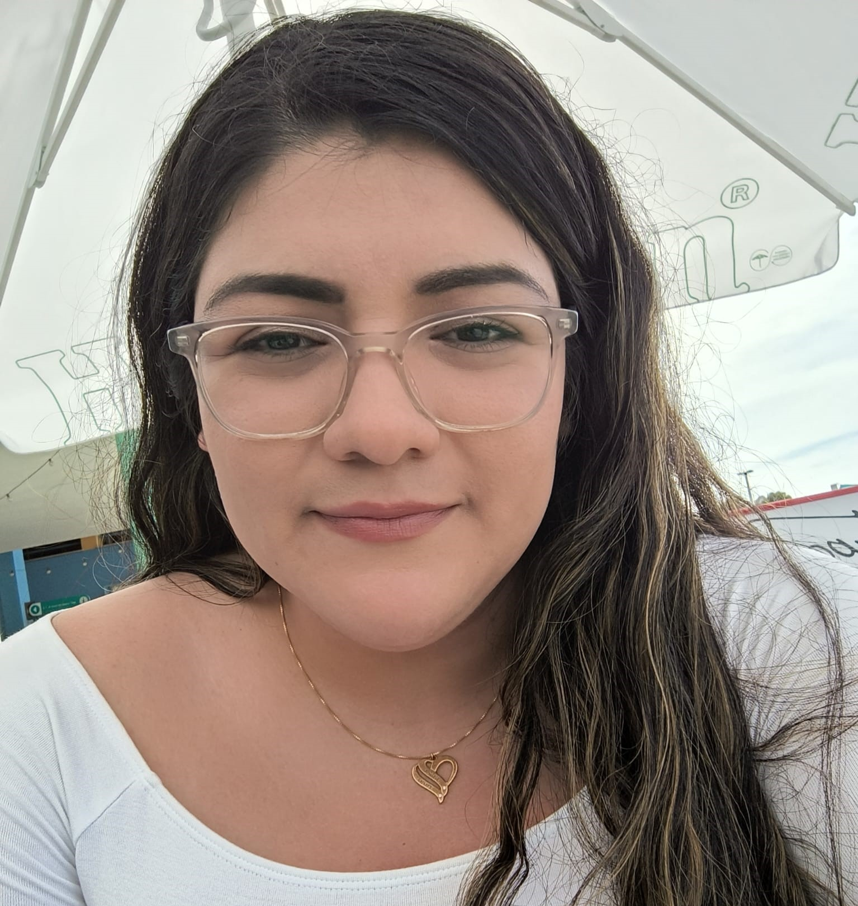

Laura Vela

Summary
I am a responsible, hard-working, and honest person, with expertise in web Development front and backend.
Education
- Computer System Engineer, Instituto Tecnologico de León (2010 - 2015)
- MSc. in Applied Software Development, CCT College Dublin (2021 - 2022)
Work experience
-
Programmer Analyst, Hospital Aranda de la Parra (2014 - 2018)
- Gathering Requirements from client
- Analyze Requirements
- Design Prototypes
- Software Develop - front and backend
- Software Testing
- Software Implementation
- Users Training
- Preventive and Corrective Software Maintenance
- Systems Analyst, IROX IT (2018 - 2019)
- Gathering Requirements from client
- Analyze Requirements with the rest of the team (developers, testers, arquitects, scrum master, etc.)
- Design Prototypes
- Test Software
- Documentation of Software
- Meeting with clients
Skills (list relevant skills or areas of expertise)
- HTML
- CSS
- Boostrap
- Javascript
- MySQL
- PHP
- Office Systems
Awards, certifications, or other achievements
- Microsoft Database Certification
- Diploma in Devops
- Diploma in Python
Hobbies
Contact Me